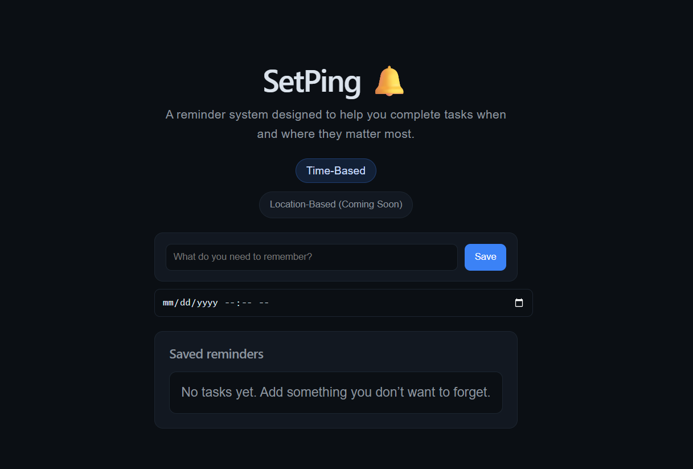

I build user-focused web applications with React, emphasizing clarity, usability, and real-world problem solving.
Focused on intuitive design and solving real-world problems through simple, effective interfaces.

A user-focused reminder app designed to improve task follow-through with simple, low-distraction interactions.
React • State Management • LocalStorage • UX Design
I’m currently open to frontend opportunities and would love to connect.